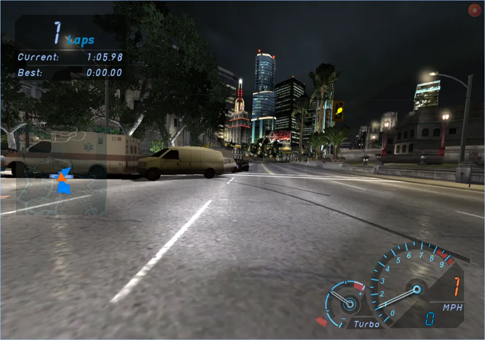

De 65.7 a 28.2 segundos: alojar un juego de PC de 2 GB en Cloudflare R2
Un disco duro de 2003 contestaba una lectura en unos milisegundos. Un servidor del otro lado del mundo contesta en decenas. El juego no sabe la diferencia, y lee mucho.

El juego completo, con música
El paquete público pesa 1.95 GB: el programa recompilado, los datos del juego, cada canción con licencia y los videos. No se recorta nada. El programa, speed.wasm, pesa unos 70 MB y viaja comprimido en unos 16 MB. La primera visita baja unos 42.5 MB para llegar al menú principal; pistas y coches llegan cuando el juego los pide.
Dónde vive
- Cloudflare R2 guarda los archivos. Descargar desde R2 no cuesta nada, y eso importa para un juego de 2 GB.
- Tres encabezados de respuesta (
Cross-Origin-Opener-Policy,Cross-Origin-Embedder-Policy,Cross-Origin-Resource-Policy) activan el aislamiento de origen cruzado, que el navegador exige antes de compartir memoria entre los hilos del juego. - Las páginas y los scripts nunca se guardan en la caché del borde; los datos del juego se guardan un día. Los scripts llevan el número de build en su dirección, así una build nueva nunca se mezcla con una vieja.
La medición que lo encontró
En nuestra ruta de prueba más pesada, del link a manejar, el sitio en vivo tardaba 65.7 segundos. El tamaño de la descarga no era el problema. Una captura de cada petición mostró 516 peticiones por rango seguidas, cada una esperando unos 75 ms a la anterior: el juego lee un archivo, luego el siguiente, igual que en un disco duro, y ahora cada lectura cuesta un viaje de ida y vuelta.
La solución
- Un archivo de hasta 8 MB se baja completo en su primera lectura y se guarda, así sus lecturas siguientes no cuestan nada.
- Una lista de lo que el juego siempre leía en esa ruta, grabada de visitas reales, dejó que cuatro hilos de precarga bajaran esos archivos antes de que el juego los pidiera.
En un servidor de prueba con 80 ms de retraso agregados a cada petición, la misma ruta pasó de 66.3 a 22.7 segundos. En el sitio en vivo, una primera visita pasó de 65.7 a 28.2 segundos, y una segunda visita, con la caché del navegador caliente, a 21.4.
El cargador es host/files.c y la herramienta de medición es tools/loadcap.mjs. Para ver el resultado, abre el juego.